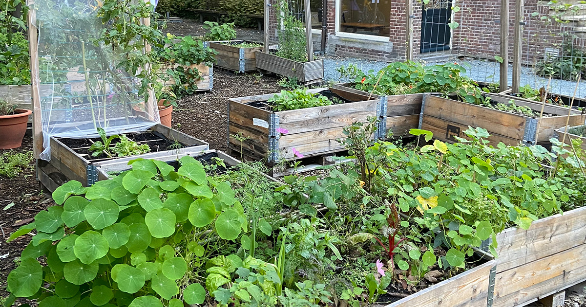

De achtertuin van het KIT (Royal Tropical Institute) is sinds 2018 omgetoverd in een moestuin voor buurtbewoners, maar iedereen is welkom! Kom snel langs om een kijkje te nemen dit groene gebiedje. Er staan ruim 20 moestuinbakken, een pluktuin, een kas en zelfs een wormenhotel.
Huur een bak! Als je graag zelf je groenten, fruit en/of kruiden wil verbouwen en je woont dichtbij, kan je hier een bak huren en lekker tuinieren in de stad. Vul het formulier in via deze onderstaandelink voor het huren van een bak voor aankomend seizoen. Link
